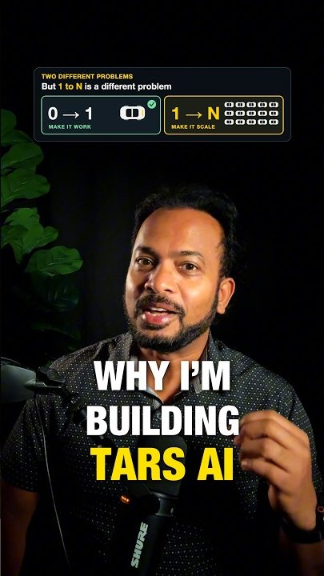
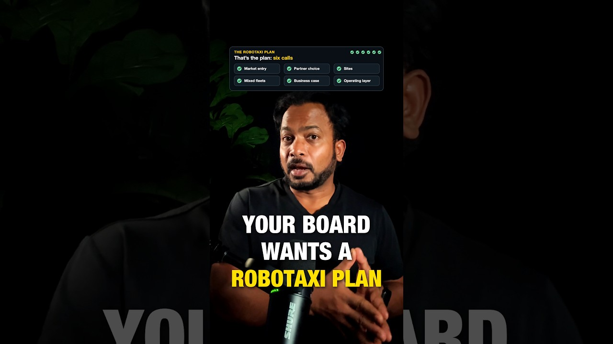
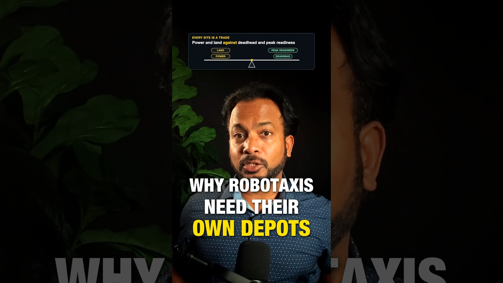
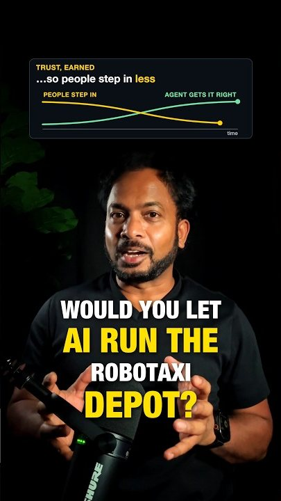
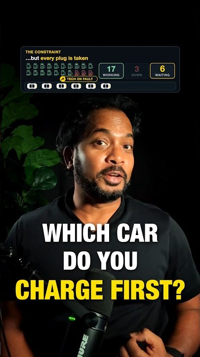
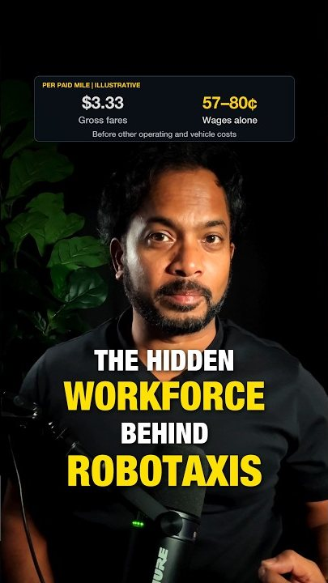

For owners of human-driven fleets
You have the fleet. What’s your robotaxi plan?
I help fleet owners assess the robotaxi opportunity: where to enter, which developers to pursue, and what their sites and operations need to become.
I'm Arun, co-founder of TARS AI. I worked on a purpose-built autonomous vehicle, and I now focus on the operation that has to run around one.
- Role
- Co-founder and Co-CEO, TARS AI
- Focus
- Scaling autonomous fleet operations
- Base
- San Francisco Bay Area
Background
From 0 to 1. Now focused on 1 to N.
Much of my career has centered on bringing new technology into the world: embedded systems, aircraft software, cloud infrastructure, banking applications and a purpose-built autonomous vehicle. Along the way, I’ve led innovation labs across technology, healthcare and banking, working from early concepts through development and deployment.
That is 0 to 1: getting something new to work for the first time. What draws me now is 1 to N: taking technology that works and building the operation that lets it scale. For autonomous fleets, that means bringing sites, charging, maintenance, people and software together as one system.
Work with me
Decide where robotaxis fit in your fleet business.
You have vehicles, sites and people. Where do those assets fit in a robotaxi business? Which developers should you pursue? What would your operation need to change?
I help fleet owners work through those decisions and develop a plan around their markets, sites and existing business.
Choose where to enter
Assess your markets, potential developer partners and the business case, so you can decide where to focus your effort and investment.
Know what your first site needs
Work through layout, charging, staffing, turnaround and operational handoffs to identify what needs to change before deployment.
Plan the mixed years
Set out how human-driven ICE, EV and autonomous vehicles will share sites, infrastructure and people as your fleet changes.
The lens
The car is autonomous. The operation around it is not.
Someone still has to charge it, clean it, fix it and recover it from the roadside, on a clock set by rider demand. Fleet owners already do most of that work every day. What changes is that there is no driver to move the car, spot a problem or fill a gap, so the operation has to be designed to run without one.
- Plan for the mixed years.
Human-driven and autonomous vehicles will share your sites for years. Infrastructure and staffing decisions need to account for that transition.
- Design the depot as one system.
Charging, cleaning and inspection affect the same outcome: when a vehicle is ready to return to service. Plan those steps together.
- Choose partners against operating requirements.
Compare vehicle needs, launch markets, turnaround expectations and economics with what your operation can deliver.
TARS AI
An operation as autonomous as the vehicles themselves.
I co-founded TARS to build physical AI for fleet operations. We’re developing AI agents to coordinate operational decisions, with robotics for routine physical work.
TARS AIOperating vision
TARS AI operating vision: AI agents and robotics at the center of a cycle from dispatch to on the road, back to depot, charging, clean and inspect, maintenance and dispatch again. Supporting functions include cities and states, rider support, remote operations, incidents and collisions, roadside and towing, satellite sites, parking, the power grid, crews, vendors and parts, and service centers.
Which car should charge next? What work does it still need? Can it get back to riders before demand peaks? The agents weigh those questions together.
We start with a human in the loop. Agents recommend; operators approve or override. We record what was recommended, why, and what the operator decided. That record gives us a foundation for improving the agents and checking their behavior as more decisions become autonomous.
The goal: more cars carrying riders when demand peaks, less time lost between rides, and each person able to support more of the fleet. That is the economics behind the ambition: an operation as autonomous as the vehicles themselves.
The series
The 1 to N series
Short videos on the operational questions behind autonomous fleets: the people, decisions and systems that keep cars ready for service.
-

EP 01 · Start here Why I'm building TARS AI Getting robotaxis on the road is one challenge. Keeping thousands running profitably is the next. Watch on YouTube -

EP 06 Your board wants a robotaxi plan. Start with these six calls Your board just asked for a robotaxi plan. If you run rental cars, rideshare supply or a corporate fleet, it comes down to six calls, and they are all connected. Read and watch -

EP 05 Why robotaxis need their own depots: power, deadhead and control Every city already has places to charge, clean and fix cars. Almost none of it was built for robotaxis. Read and watch -

EP 04 Would you let AI run the robotaxi depot? What would it take to coordinate depot operations with AI agents? Watch on YouTube -

EP 03 Which robotaxi do you charge first? Rush hour starts in 60 minutes and three chargers are down. Lowest battery first is usually the wrong call. Watch on YouTube -

EP 02 The hidden workforce behind robotaxis Robotaxis have no drivers, but they still need a workforce. The job postings show who they are. Watch on YouTube
Contact
What decision is in front of your fleet?
Email contact@tarsai.co with your fleet type, the markets you operate in and the question you are working through. That gives us a useful place to start.
Follow along on LinkedIn, YouTube and TikTok for practical perspectives on robotaxi economics, fleet operations and scaling physical AI.